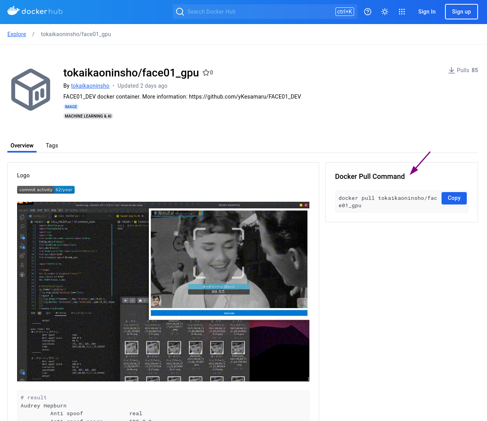
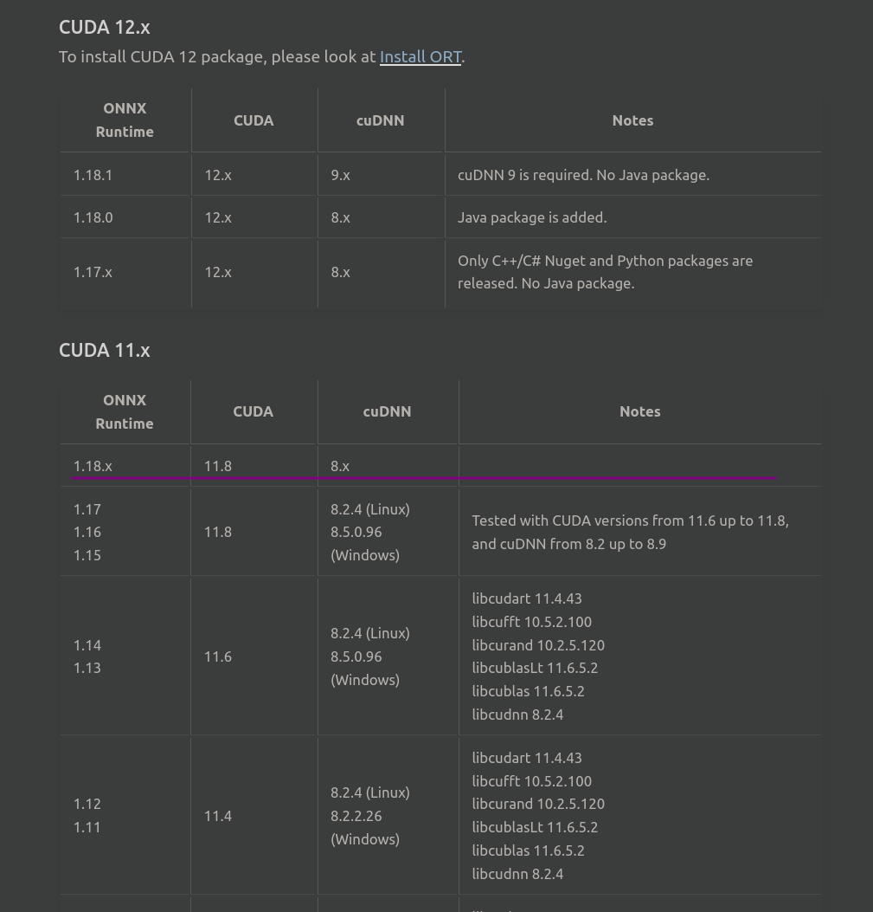

FACE01ライブラリのステップバイステップガイド
FACE01の世界へようこそ！

この記事では、エグザンプルプログラムを使用して、`FACE01`を用いた顔認識アプリケーションを作成するために必要な知識と技術を紹介します。
準備はいいですか？
まずは、チェック項目を確認しましょう。
ライセンス
チェック項目
✅
[x] Pythonの基本操作
[x] Dockerの基本操作
[x] Linuxターミナルの基本操作
[x] (Nvidia GPUを使用する場合) CUDAドライバがすでにインストールされていること
すべての項目を確認しましたか？ OK！では始めましょう！
[Dockerの使用]
''⭐️''FACE01を使用する際、一番簡単な環境構築方法はDockerを用いることです。
こちらで用意した`Dockerイメージ`を使うことで、煩わしい環境設定から解放されるだけでなく、予期せぬエラーやローカル環境の汚染を防ぐことが出来ます。


dockerhubから最新のイメージをプルしましょう。
docker pull tokaikaoninsho/face01_gpu
FACE01のインストール
まっさらなシステムにFACE01を直接インストールしたい方はこちらをご覧ください。
顔画像の登録
この記事では、顔画像の登録方法について説明します。 詳細はこちらをご覧ください。
仮想Python環境の有効化
Python標準ライブラリのvenvを使用して仮想環境を開始します。
# 仮想環境の有効化
. bin/activate
vimのインストール確認
Dockerイメージにはvimがインストールされているので、conf.iniを編集できます。
# vimのインストール確認
which vim
設定ファイルの編集
設定はconfig.iniファイルで行います。
config.iniファイルについてはこちらをご覧ください。
FACE01の簡単な使用フロー
FACE01の使い方の一例ですが、簡単なフローを見てみましょう。 詳細はこちらをご覧ください。
ファンクションについて
FACE01を試用する上での基本的なファンクションについてこちらで確認しましょう。
簡単な顔認識
simple.pyを試してみましょう。
simple.pyはCUI動作のためのエグザンプルのスクリプトです。
python example/simple.py
詳細はこちらをご覧ください。
GUIウィンドウの表示
かっこいいGUIウィンドウに表示したいですか？
example/display_GUI_window.pyを試してみてください。
詳細はこちらをご覧ください。
python example/display_GUI_window.py
詳細はこちらをご覧ください。
会社の「テロップ」や「ロゴ」画像を表示
ウィンドウに会社のロゴなどを表示したいですか？ もちろん可能です！ 詳細はこちらをご覧ください。
ベンチマークを取りたい？
詳細はこちらをご覧ください。
エグザンプルリスト
# 1. Simple
python example/simple.py
# 2. Display GUI window
python example/display_GUI_window.py
# 3. logging
python example/example_logging.py
# 4. data structure
python example/data_structure.py
# 5. Benchmark with CUI mode
python example/benchmark_CUI.py
# 6. Benchmark with GUI mode
python example/benchmark_GUI_window.py
# Other
- example/aligned_crop_face.py
- example/anti_spoof.py
- example/distort_barrel.py
- example/draw_datas.py
- example/face_coordinates.py
- example/get_encoded_data.py
- example/lightweight_GUI.py
...and others.
FACE01の多くのクラスとメソッドの詳細については、FACE01ドキュメントをご覧ください。
トラブルシューティング

開発にトラブルはつきもの！😥
発生しやすいトラブル例をまとめました。
CUDAが動作しない
CUDAライブラリをすべて削除して再インストールする方法をご覧ください。
dlib.DLIB_USE_CUDAがFalseの場合の対処法
dlib.DLIB_USE_CUDAがFalseの場合の対処法をご覧ください。
libcudart.so.11.0などが見つからないエラーが出力される
nvidia-cuda-toolkitをインストールする
libcudart.so.11.0はCUDAランタイムライブラリです。まずCUDAがシステムに正しくインストールサれているか確認してください。
sudo apt update
sudo apt install -y nvidia-cuda-toolkit
ONNX RuntimeとCUDAのバージョンの互換性を確認する
ONNX RuntimeとCUDAのバージョンの互換性は以下のサイトから確認できます。
CUDA Execution Provider: Requirements

シンボリックリンクの作成
libonnxruntime_providers_cuda.soなどが必要とする（依存する）ライブラリがすべて正しい場所に存在することを確認します。
ldd /home/user/bin/FACE01/lib/python3.10/site-packages/onnxruntime/capi/libonnxruntime_providers_cuda.so
上記の出力結果から、たとえば以下のようにシンボリックリンクを作成します。
# libcufft.so.10 のシンボリックリンク作成
sudo ln -s /usr/lib/x86_64-linux-gnu/libcufft.so.10 /usr/local/cuda-11.8/lib64/libcufft.so.10
# libcublas.so.11 のシンボリックリンク作成
sudo ln -s /usr/lib/x86_64-linux-gnu/libcublas.so.11 /usr/local/cuda-11.8/lib64/libcublas.so.11
# libcublasLt.so.11 のシンボリックリンク作成
sudo ln -s /usr/lib/x86_64-linux-gnu/libcublasLt.so.11 /usr/local/cuda-11.8/lib64/libcublasLt.so.11
環境変数に正しいパスを記述して永続化させる
CUDAライブラリが正しいパスに設定されているか確認します。
~/.bashrcに以下の記述を行います。
export PATH=/usr/local/cuda-11.8/bin:$PATH
export LD_LIBRARY_PATH=/usr/local/cuda-11.8/lib64:$LD_LIBRARY_PATH
export CUDA_HOME=/usr/local/cuda-11.8
.bashrcを再読込してください。
source ~/.bashrc
ONNX Runtimeを再インストール
pip uninstall onnxruntime-gpu
pip install onnxruntime-gpu==1.18.1
以上で必要なCUDAライブラリが正しくロードされるはずです。
![HINT]
Dockerを利用すると簡単に環境構築ができます。